Teakwood Global Services
User Guide
KarboSync takes the invoices you have approved in Karbon and creates them as customer invoices in Odoo. You choose which invoices to send, which Odoo company they belong to, which Odoo customer they are billed to, and whether they become separate Odoo invoices or one combined invoice.
This guide walks through signing in, finding invoices, selecting them and sending them to Odoo, with step-by-step examples for the most common situations.
Open https://karbon-to-odoo.vercel.app in your browser. You sign in with your Odoo account: the same username (usually your email) and password you use to log in to Odoo. There is no separate KarboSync password.
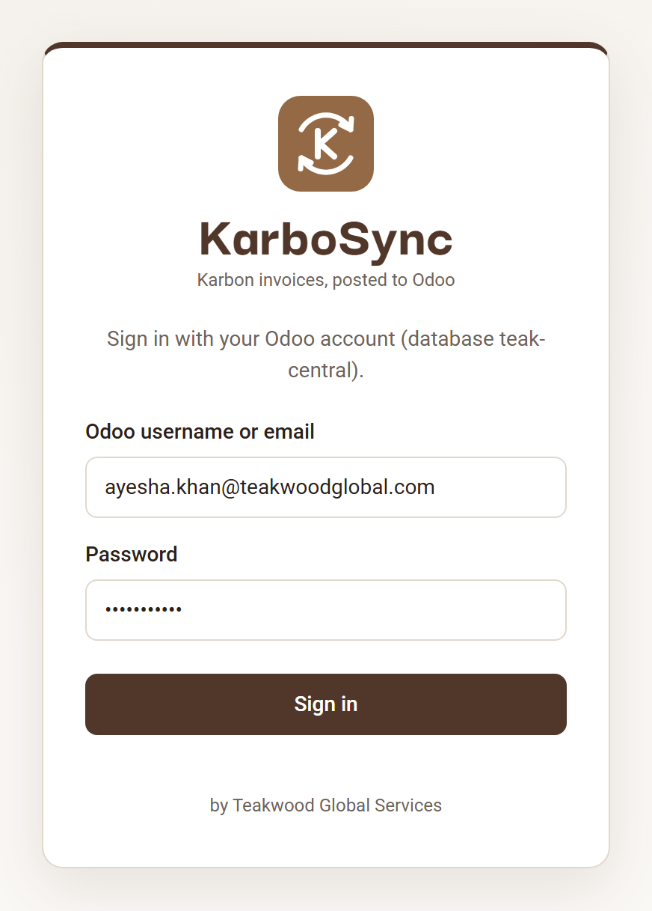
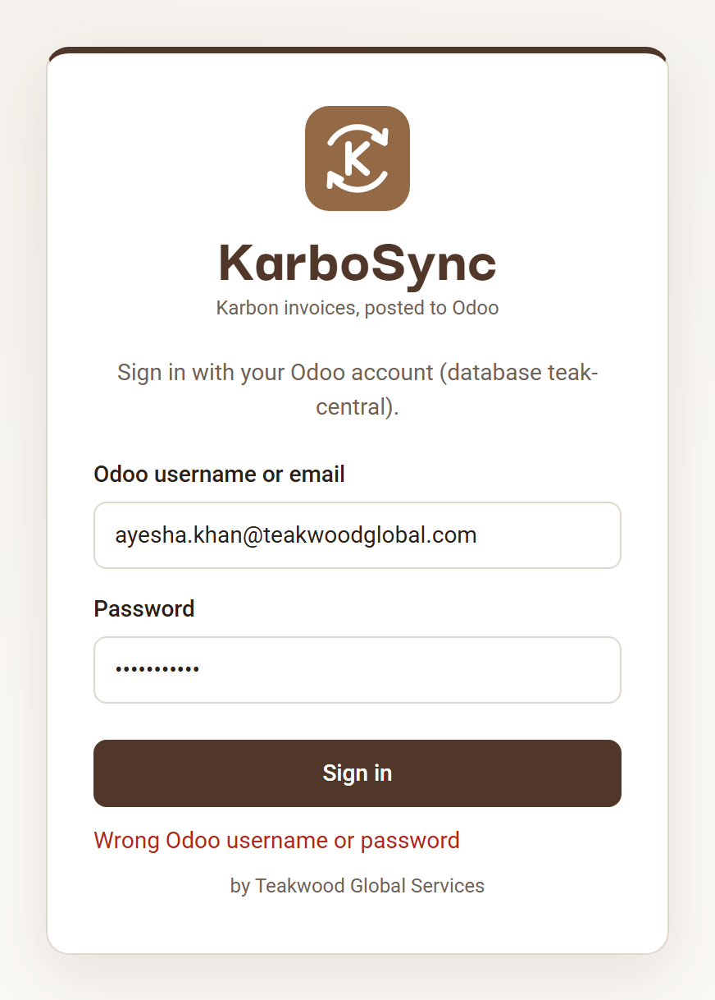
After signing in, KarboSync loads your approved Karbon invoices, newest first. Only invoices with the status Approved are listed: approve an invoice in Karbon first and it appears here. While the list loads you see a spinning loader; this usually takes a few seconds.
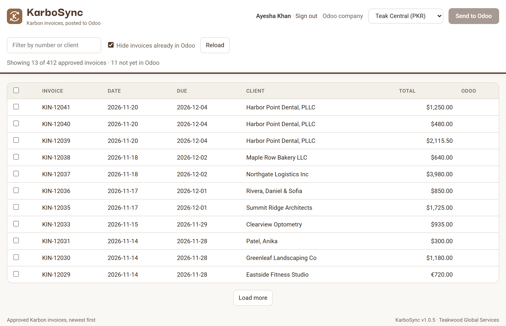
| Part of the screen | What it means |
|---|---|
| Invoice, Date, Due | The Karbon invoice number, invoice date and payment due date. |
| Client | The client the invoice is for in Karbon. |
| Total | The invoice total in its own currency. |
| Odoo | Empty when the invoice is not in Odoo yet. Otherwise it shows the Odoo invoice (for example Draft #37 or INV/2026/00038), the Odoo company and the Odoo customer. Click the invoice to open it in Odoo. |
| Status line | Under the toolbar, for example "Showing 13 of 412 approved invoices · 11 not yet in Odoo". It also shows progress and results while sending. |
| Control | What it does |
|---|---|
| Filter by number or client | Shows only invoices whose number or client name contains what you type. It searches the invoices already loaded on the page. |
| Hide invoices already in Odoo | On by default, so the list shows only what still needs sending. Untick it to see everything, including invoices already in Odoo. |
| Reload | Fetches the list again from Karbon and Odoo. Use it after approving new invoices in Karbon, or after changing invoices in Odoo. It clears your current selection. |
| Load more | At the bottom of the list. Loads the next 100 older invoices. |
Untick Hide invoices already in Odoo to see them. Their checkbox is greyed out, because an invoice can only be in Odoo once.
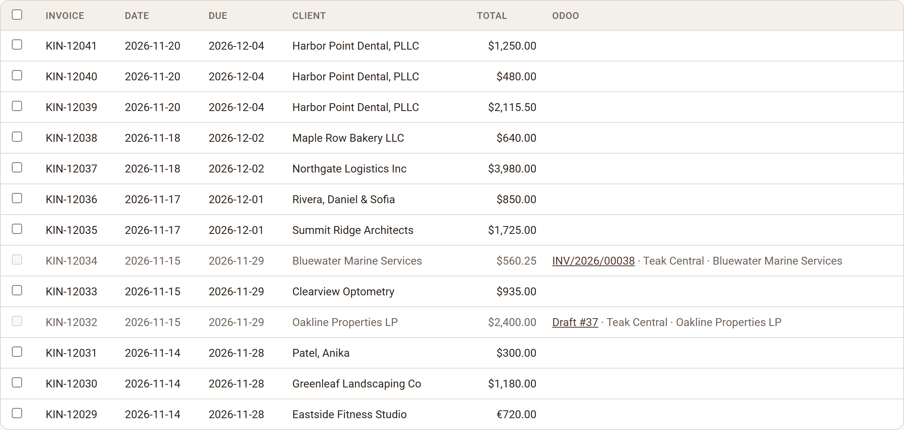
Pick the Odoo company the invoices belong to in the Odoo company drop-down at the top right. The currency after the name is that company's own currency.
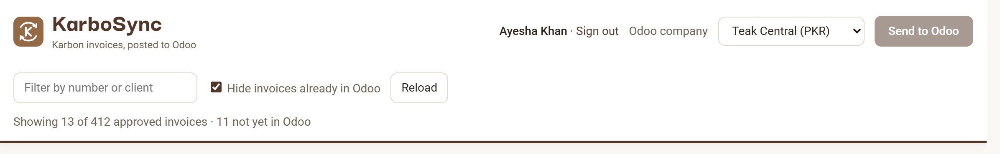
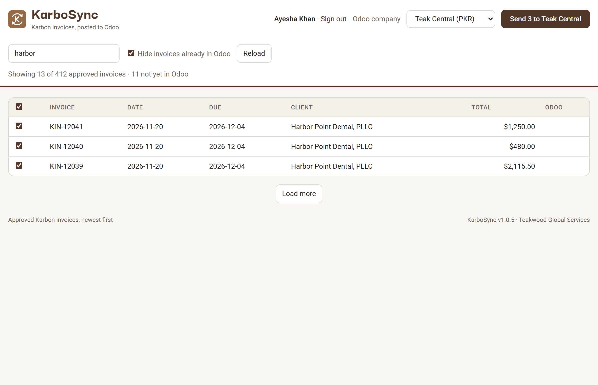
Click Send … to …. A window opens where you decide who the invoices are billed to in Odoo and, when more than one is selected, how many Odoo invoices to create. Nothing is sent until you click the button at the bottom of this window; Cancel closes it without sending.
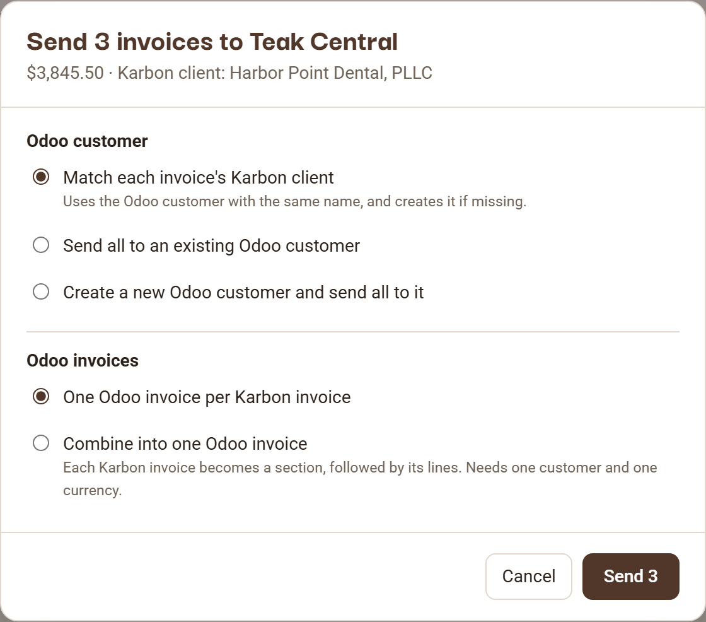
The top of the window summarises your selection: how many invoices, which Odoo company, the total, and the Karbon client (or how many different clients).
| Match each invoice's Karbon client (default) | Each invoice goes to the Odoo customer with exactly the same name as its Karbon client. If no such customer exists, KarboSync creates it. |
| Send all to an existing Odoo customer | Every selected invoice goes to one customer you pick from Odoo, even if the Karbon client names differ. |
| Create a new Odoo customer and send all to it | KarboSync creates one new Odoo customer with the name you type, and every selected invoice goes to it. |
| One Odoo invoice per Karbon invoice (default) | Each Karbon invoice becomes its own Odoo invoice. Sent one after another; each row shows its own result. |
| Combine into one Odoo invoice | All selected Karbon invoices become a single Odoo invoice. Each Karbon invoice appears as a section heading (its number and date) followed by its lines. The invoices must share one currency and go to one customer. |
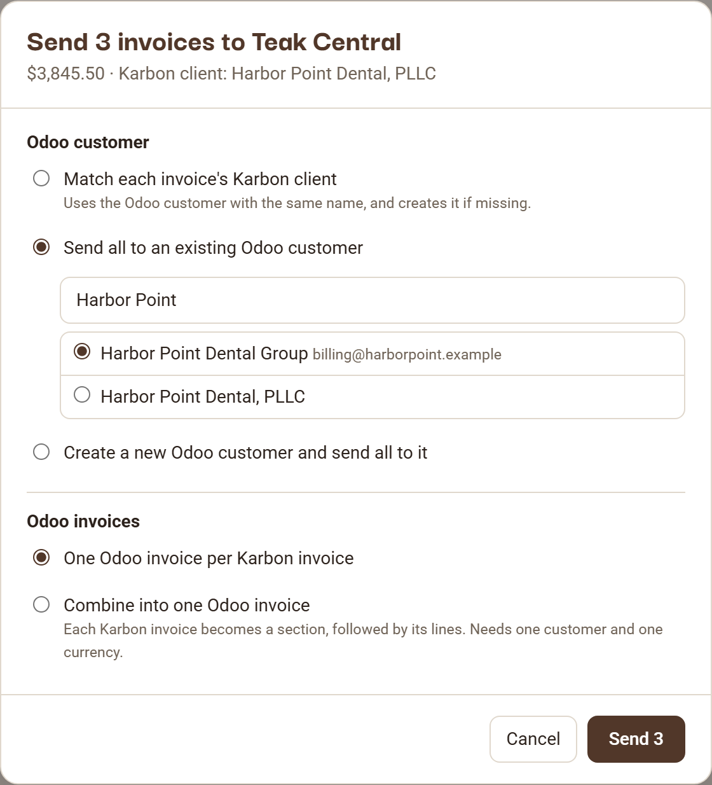
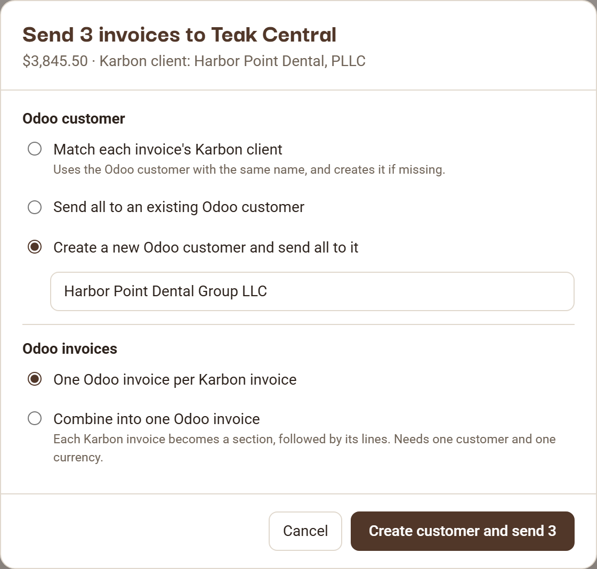
The everyday case: several clients, one Odoo invoice for each Karbon invoice.
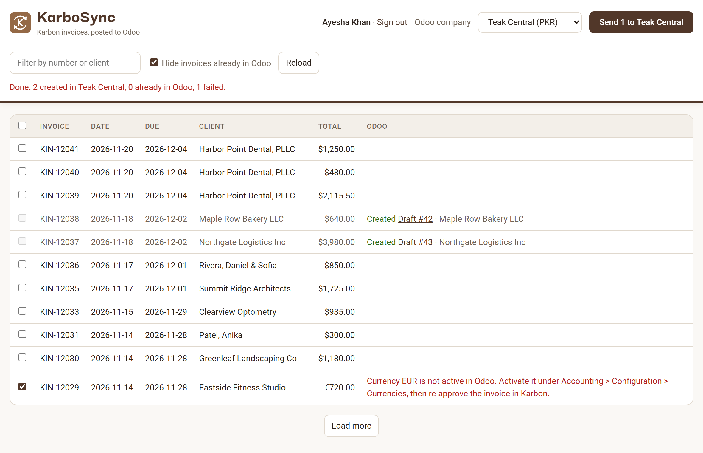
Use this when a client should receive a single Odoo invoice that covers several Karbon invoices, for example all of this month's work.
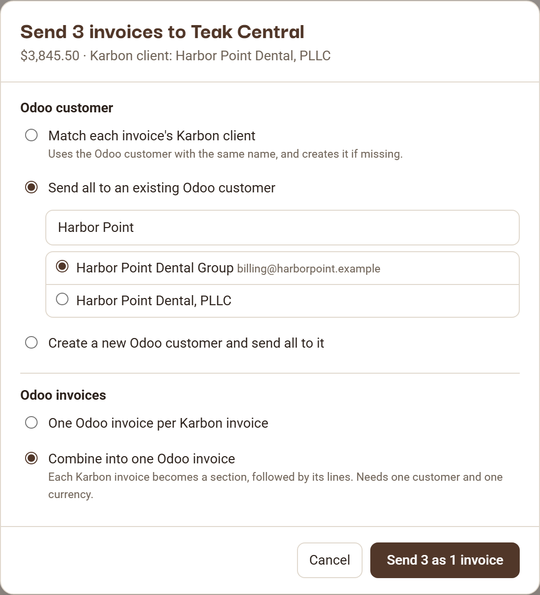
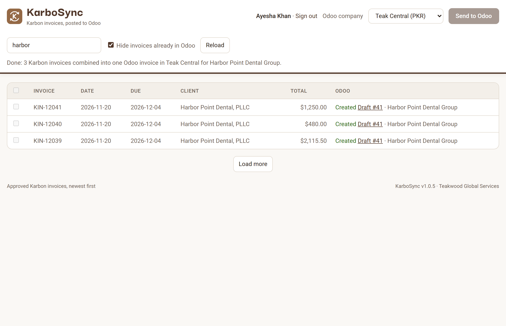
Use this when several Karbon clients should be billed to one Odoo customer (for example, a parent company), but each Karbon invoice should stay its own Odoo invoice.
Two ways, depending on the name you want in Odoo:
KARBON-KIN-12038. A combined invoice lists every number, for example KARBON-KIN-12041, KARBON-KIN-12040, KARBON-KIN-12039. Search by this reference in Odoo to find an invoice.Messages appear in red on the sign-in page, in the status line, in the Odoo column of the invoice that failed, or at the bottom of the Send window.
| Message | What to do |
|---|---|
| Wrong Odoo username or password | Check both and try again. Use the same details as for Odoo itself. With two-factor authentication, use an Odoo API key as the password. |
| Too many failed sign-ins. Try again in 5 minute(s). | Wait 5 minutes, then sign in with the correct password. |
| Your Odoo user is not allowed to create customer invoices | Ask your Odoo administrator for invoicing rights. |
| Your session has ended, please sign in again | You were signed in for more than 8 hours, or signed out. Sign in again. |
| A company is missing from the Odoo company list | Ask your Odoo administrator to add the company to your user's Allowed Companies, then sign in again. |
| Currency XXX is not active in Odoo… | Ask your Odoo administrator to activate the currency (Accounting › Configuration › Currencies), then send the invoice again. |
| Invoices in different currencies cannot be combined | Combine only invoices in the same currency, or send them as separate invoices. |
| These are for different Karbon clients: pick an existing or new Odoo customer to combine them | To combine invoices for different clients, choose Send all to an existing Odoo customer or Create a new Odoo customer. |
| Already in Odoo, unselect them to combine the rest: … | One of the selected invoices was sent to Odoo in the meantime. Untick the invoices named in the message, or click Reload. |
| Invoice KIN-… is … in Karbon, only approved invoices are sent | The invoice is no longer approved in Karbon. Approve it in Karbon and click Reload. |
| Pick an Odoo customer / Enter the new customer name | Choose a customer from the list, or type a name, before clicking Send. |
| Odoo is unreachable… | KarboSync cannot reach Odoo. The Karbon list still shows, but nothing can be sent. Try again later and tell your administrator if it continues. |
| An approved invoice is not in the list | Click Load more until it appears. If it was approved a moment ago, click Reload. Check that Hide invoices already in Odoo is not hiding it. |
Select the invoices, click Send … to …, then make these choices in the window:
| I want to… | Odoo customer | Odoo invoices |
|---|---|---|
| Send invoices to their own clients, one Odoo invoice each | Match each invoice's Karbon client | One Odoo invoice per Karbon invoice |
| Put several invoices of one client into one Odoo invoice | Match each invoice's Karbon client or an existing customer | Combine into one Odoo invoice |
| Bill several clients' invoices to one Odoo customer, one invoice each | Send all to an existing Odoo customer | One Odoo invoice per Karbon invoice |
| Bill several clients' invoices to one Odoo customer, as one invoice | Send all to an existing Odoo customer | Combine into one Odoo invoice |
| Bill to a customer that is not in Odoo yet, with a different name from Karbon | Create a new Odoo customer and send all to it | Either |
| Send one invoice | Any | Not shown |